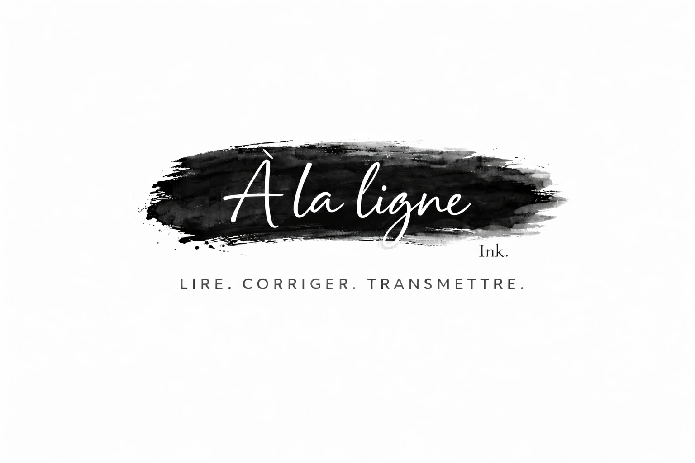

Correction
Correction orthographique, grammaticale, syntaxique et typographique.

Les mots sont les vôtres. Je veille à ce qu’ils trouvent leur juste place.
Correctrice-relectrice indépendante, j’accompagne les auteurs, les professionnels et les particuliers dans la relecture et la correction de leurs textes.
Demander un devisLire avec attention. Corriger avec précision. Respecter la voix de l’auteur.
Orthographe, grammaire, syntaxe, ponctuation, typographie ou besoin d’un regard extérieur : chaque texte mérite une lecture minutieuse.
Chaque texte est différent. Je vous propose un accompagnement adapté à votre projet et à vos besoins.
Correction orthographique, grammaticale, syntaxique et typographique.
Repérage des répétitions, incohérences, maladresses et problèmes de fluidité.
Propositions lorsque certaines phrases peuvent gagner en clarté ou en fluidité.
Cohérence typographique et éditoriale : titres, citations, capitales, nombres, abréviations, références…
À la ligne, Ink. est née d’une envie assez simple : faire de la lecture un métier.
J’aime lire, mais j’aime aussi tout ce qui se passe autour du texte : chercher, observer, repérer ce qui ne fonctionne pas, traquer la faute qui s’est glissée entre deux phrases.
La correction m’offre exactement ce que je recherchais : du temps passé avec les textes, de la minutie et cette satisfaction particulière de trouver ce que l’on ne voyait plus.
Je travaille avec attention et précision, sans perdre de vue l’essentiel : le texte appartient à son auteur. Mon rôle n’est pas de le réécrire à sa place, mais de l’aider à aller au bout de ce qu’il cherche à dire.
J’accorde donc une grande importance aux remarques et aux reformulations que je peux proposer. Elles doivent être utiles, compréhensibles et toujours respecter l’esprit du texte.
À la ligne, Ink., c’est finalement cela : lire attentivement, corriger avec précision et permettre à chaque texte de trouver son lecteur.
Une formation spécialisée dans le domaine de la correction.
Un score attestant d’une solide maîtrise de la langue française.
Une appartenance professionnelle qui s’inscrit dans la pratique du métier de correctrice.
Romans, nouvelles, récits, essais, biographies…
Mémoires, thèses, travaux universitaires, rapports de recherche…
Rapports, dossiers, présentations, documents professionnels…
Courriers importants, publications associatives, dossiers, communications…
Chaque texte est différent. Le temps nécessaire dépend de son volume, de son état et du niveau de correction souhaité.
Pour vous permettre de découvrir ma façon de travailler, je corrige gratuitement quelques pages de votre texte avant de vous établir un devis.
Me contacterLe tarif dépend du volume du texte et du niveau de correction souhaité. Après avoir pris connaissance de votre texte, je vous adresse un devis personnalisé.
Oui. Je corrige gratuitement les premières pages de votre texte afin que vous puissiez découvrir ma façon de travailler avant de vous décider.
Vous pouvez m’envoyer votre texte par e-mail. Pour établir un devis, quelques pages représentatives peuvent suffire dans un premier temps.
Je travaille principalement avec Microsoft Word et le suivi des modifications. Je peux également travailler sur Pages, LibreOffice et PDF.
Le délai dépend du volume du texte, de son état et du niveau de correction demandé. Je vous indique le délai prévu dans le devis.
Un acompte de 40 % est demandé avant le début de la correction. Le solde est à régler à la livraison du texte corrigé. Le règlement se fait par virement bancaire.
Les textes qui me sont confiés restent strictement confidentiels. Ils sont utilisés uniquement dans le cadre de la prestation de correction ou de relecture et ne sont pas communiqués à des tiers sans votre accord.
Vous restez pleinement propriétaire de votre texte et de vos droits d’auteur. Mon intervention porte uniquement sur la correction, la relecture et, lorsque cela est prévu, les propositions de reformulation. Je n’acquiers aucun droit sur votre œuvre.
Vous avez un texte en cours, un manuscrit terminé ou simplement besoin d’un regard extérieur ? Écrivez-moi pour me présenter votre projet.
Je serai ravie d’échanger avec vous et de voir comment je peux vous accompagner.